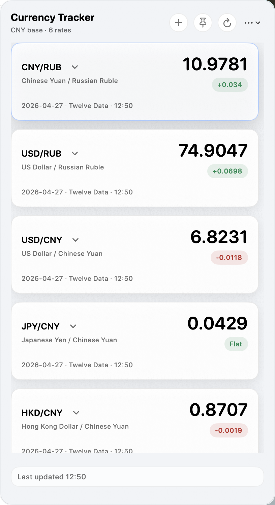
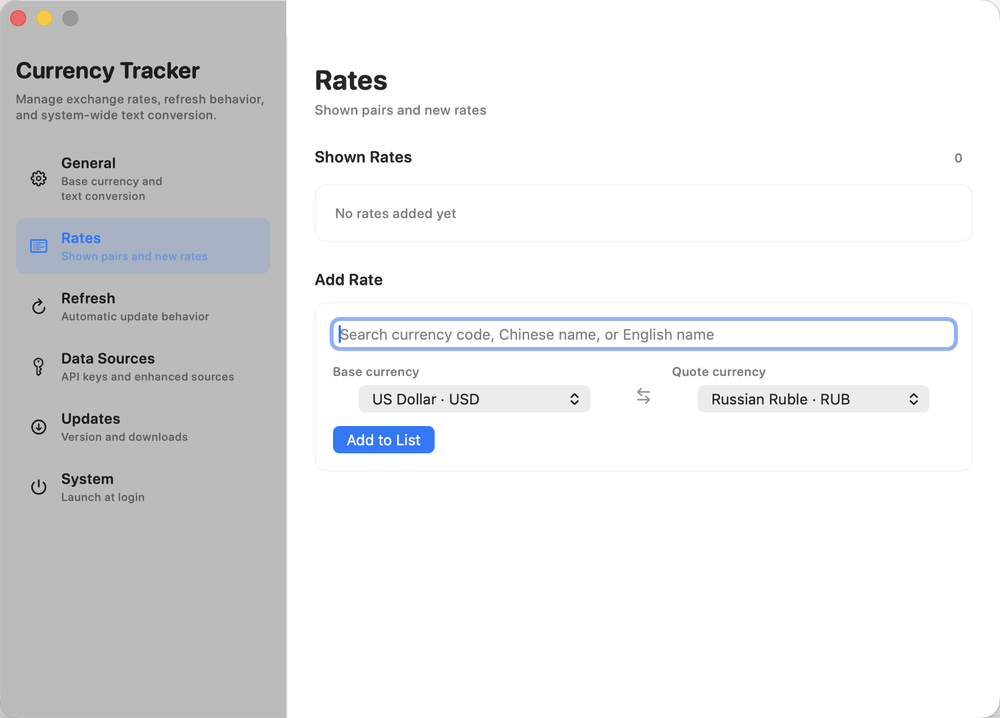
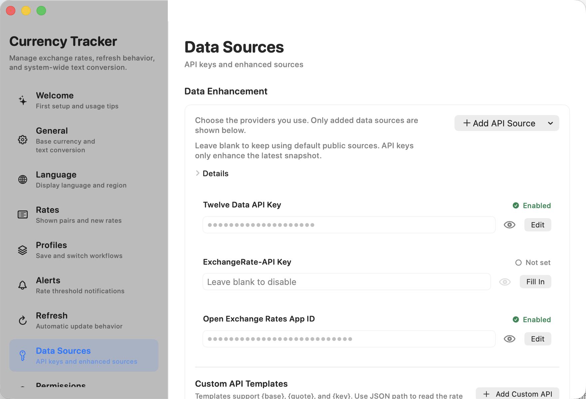

Menu bar rates
Pin the pairs you use most and open the compact panel whenever you need current rates.
Currency Tracker keeps the rates you care about one click away, with quick pair management, compact trend charts, and selected-text conversion across macOS.



Pin the pairs you use most and open the compact panel whenever you need current rates.
Expand a pair to inspect recent trends or switch to the converter without leaving the panel.
Select an amount in another app and convert it to your base currency using Services or a global shortcut.
Use built-in public sources by default, or add credentials for Twelve Data, ExchangeRate-API, Open Exchange Rates, Fixer, and Currencylayer.
The app supports English, Russian, and Simplified Chinese across the main panel and settings window.
Preferences and credentials stay on your Mac. External providers only receive the exchange-rate requests needed for refreshes.
Version 1.3 adds settings profiles, threshold alerts, custom API templates, diagnostics, and another round of macOS UI polish.